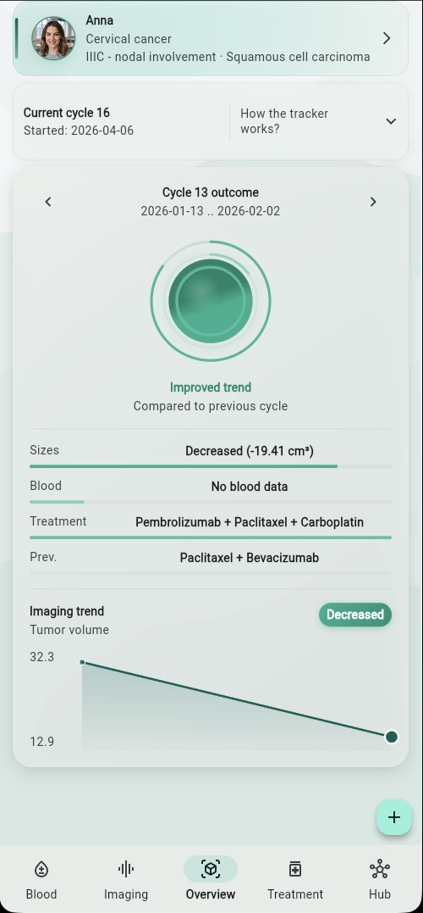
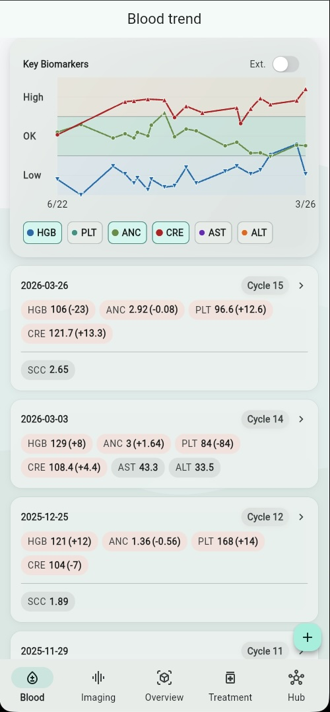
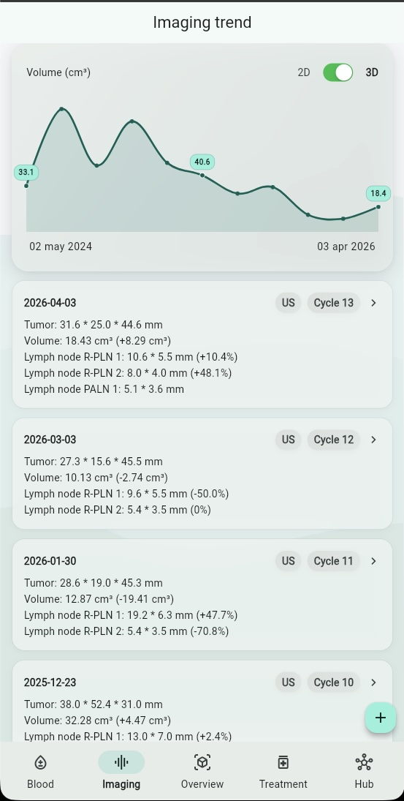
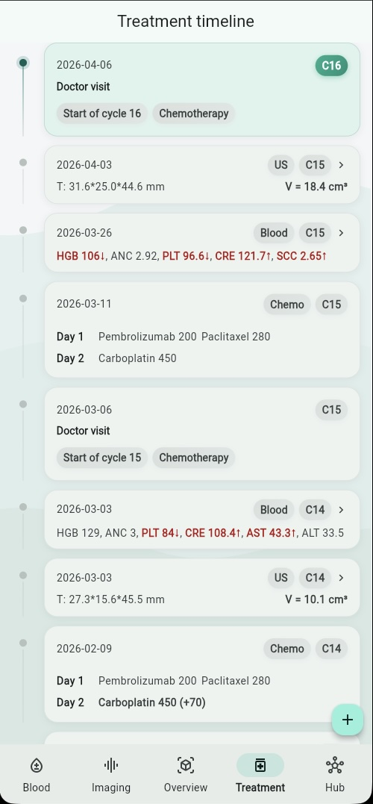
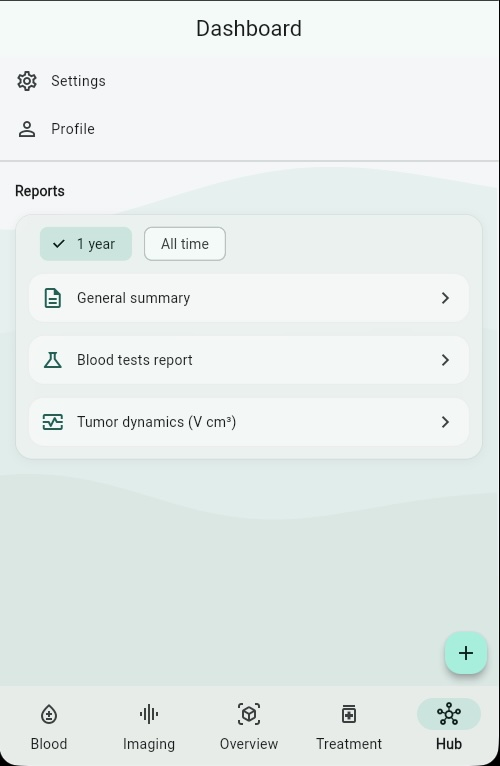
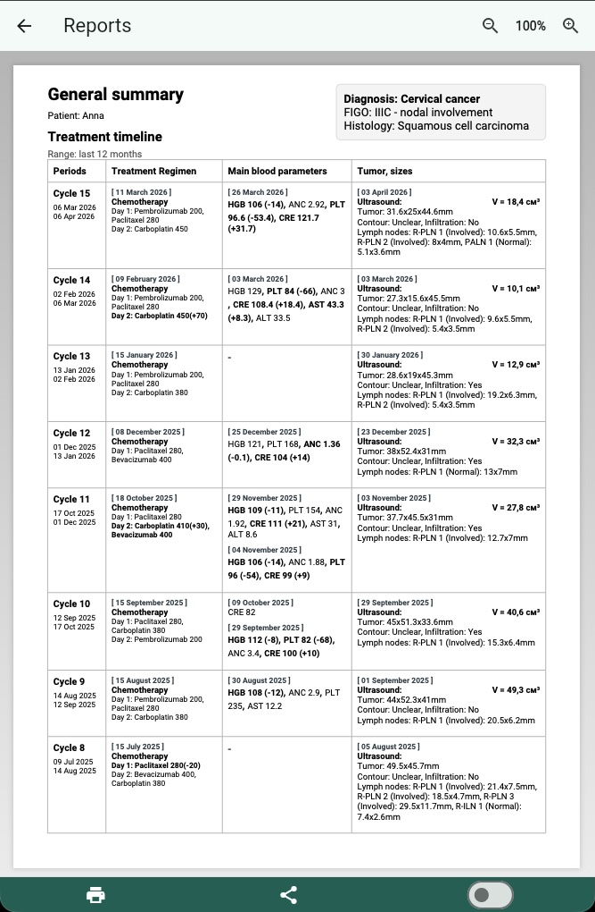

Cervical cancer monitoring,
clearer and more structured
Keep treatment, blood tests, and imaging organized in one focused system. See trends clearly. Bring structured reports to your next physician visit.

Tracking treatment shouldn't be this hard
For many patients going through cervical cancer treatment, staying on top of everything can feel overwhelming.
Scattered records
Test results live in phone photos, hospital portals, paper printouts, and messaging apps. Finding what you need takes time.
Hard to see trends
When blood tests, imaging results, and treatment events live in separate places, understanding progress over time is genuinely difficult.
Difficult follow-up visits
Explaining months of treatment history to a physician in a short appointment, from memory or scattered notes, rarely goes well.
Disconnected data
Blood markers, imaging studies, and treatments are often recorded independently — making it hard to see how they relate to each other.
One focused system for your treatment course
Cervi Tracker organizes your treatment journey in one place — so you can see what's happening, notice trends, and prepare for conversations with your physician.
Track consistently
Blood tests, imaging studies, and treatment events — all in one structured timeline. No more switching between apps and folders.
See trends clearly
Zoned blood charts, imaging volumes over time, cycle-based comparisons. The app is built to help you notice changes as they happen.
Communicate better
Generate structured reports that summarize treatment history, blood trends, and imaging dynamics — ready for your next physician visit.
Five screens, one clear picture
Each area of the app is designed around a specific part of the treatment monitoring workflow.
Your treatment status at a glance
The Overview screen brings together what matters most: your current treatment cycle, the outcome of the last completed cycle, and the latest imaging trend. It's the signal-first center of the app — designed to answer "how is it going?" without making you dig through data.
Key biomarkers, tracked over time
Log blood test results and see how key markers trend across treatment cycles. The zoned chart shows at a glance which values are within range, elevated, or low — so you can have more informed conversations with your care team.

Tumor dynamics, visible at a glance
Track ultrasound, MRI, and CT results in one unified timeline. The imaging screen charts tumor volume over time and shows how each study compares to the last — making it easier to understand the direction of change.

Your treatment course, structured and readable
Every doctor visit, chemotherapy session, radiotherapy, surgery, and supportive procedure is recorded in a structured timeline. Events are linked to treatment cycles, so the full course of treatment stays clear and organized.

Structured summaries, ready when you need them
The Hub gives you access to printable physician reports: a general summary with treatment timeline, a blood test report, and tumor dynamics charts. Generate them before your next visit and bring a clear, organized picture to the conversation.

Built around what matters right now
The Overview screen doesn't try to show everything at once. It focuses on three questions:
Blood, imaging, and treatment — connected by time
Most health apps treat records as isolated entries. Cervi Tracker organizes them around treatment cycles and timelines, so you can see how blood results, imaging findings, and treatment events relate to each other over the course of your care.
Clearer conversations with your physician
One of the hardest parts of follow-up care is explaining what's happened since the last visit. Cervi Tracker helps by generating structured, printable reports that organize your treatment journey clearly.
- General summary Treatment timeline, blood parameters, and imaging results — organized by cycle
- Blood tests report A compact table of up to 12 cycles of key biomarkers with reference ranges
- Tumor dynamics Volume or size trend chart with detailed per-study measurements and percentage changes
Reports are generated locally on your device — your data stays with you.

Purpose-built, not generic
Cervi Tracker is not a general symptom diary or a generic health journal. It's designed specifically around the cervical cancer monitoring workflow — because a focused tool is more useful than a flexible one.
Cervical-first logic
Imaging metrics, tumor size tracking, and signal evaluation are tailored for cervical cancer specifically.
Cycle-based structure
Data is organized around treatment cycles — the natural rhythm of cervical cancer care — not arbitrary dates.
Treatment-aware tracking
New cycles start from treatment decisions, not random entries. The app understands your treatment course structure.
Reports that match the workflow
Physician summaries are structured around cycles, imaging dynamics, and blood trends — the things doctors actually look at.
Important to know
Cervi Tracker is a monitoring and tracking tool. It does not provide medical advice, diagnoses, or treatment recommendations.
Treatment decisions must always be made in consultation with qualified clinicians. This app supports tracking and structured review, not clinical judgment.
Your data is private. Reports are generated locally on your device. The app does not share your medical information with third parties.